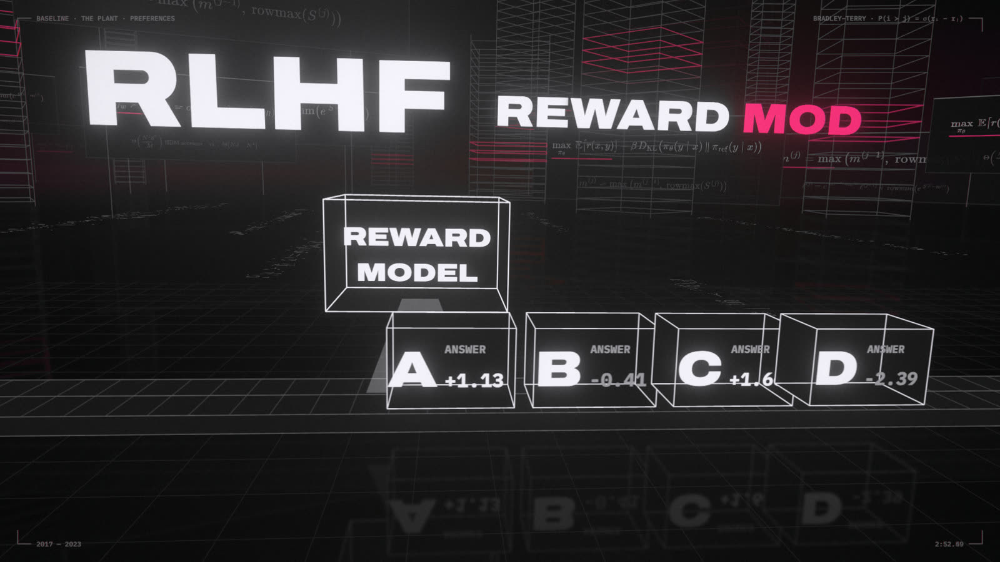
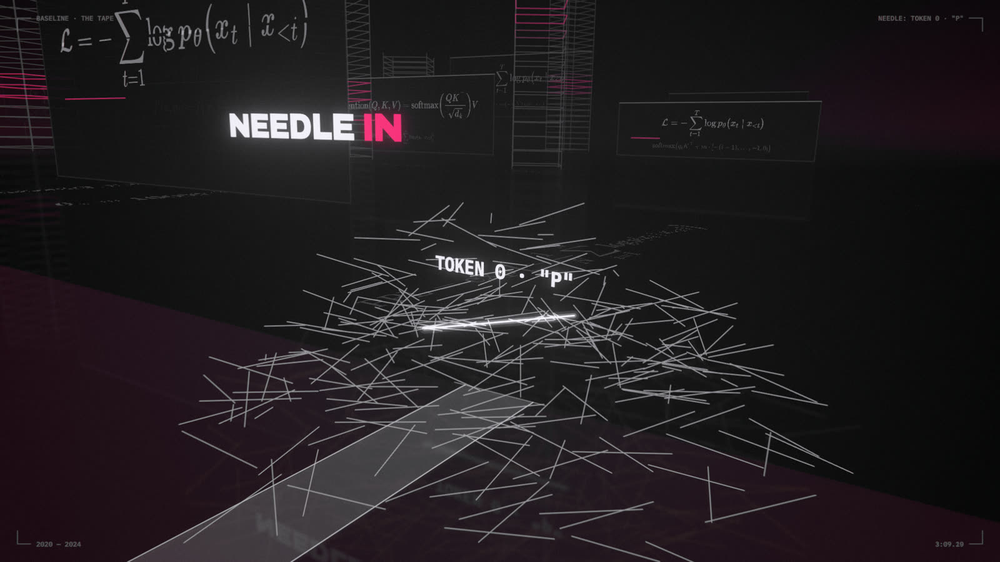

By 2020 the architecture had settled: a decoder-only Transformer, scaled up. The bridge covers what came next: making models helpful, making attention fast, and making context long.
2:59 · THE PLANT · FLASHATTENTION: a real 64 × 64 score matrix cut into 16 × 16 tiles, moved on-chip one tile at a time.
LAB · open notebooks/04_alignment_and_scale_out.ipynb in Jupyter. Each section below names the notebook section that runs it. Dotted words show a definition when you hover or tap them.
4.1 · 2018
BERT read both ways
BERT reads the whole sentence at once, both directions, and learns by filling in hidden words.
A familiar idea first
Fill-in-the-blank vs autocomplete
A cloze test ("the cat sat on the ___ and purred") lets you read both sides of the gap. Autocomplete only sees what came before. BERT trains on the first kind of task, GPT on the second.
BERT is a Transformer encoder trained by hiding words behind [MASK]. It's great for classification and search, but it can't write. The lab asks a real DistilBERT to fill the film's mask.
LAB · notebook §4.1
2:44 · BOTH WAYS · BERT: a row of glass tokens with one [MASK]. Beams read in from both ends to fill it.
Back then
BERT topped nearly every NLP benchmark at once in late 2018. Researchers spent 2019 fine-tuning it on everything, and studying it, a subfield people jokingly called "BERTology."
The business side
In 2019 Google began using BERT in Search, on about 1 in 10 US English queries, and called it one of the biggest search changes in five years.
Lore
ELMo (2018), then BERT, then ERNIE, then Big Bird: for a while NLP model names were mostly Sesame Street characters. RoBERTa, ALBERT and DistilBERT kept the joke going.
4.1 · 2020
Decoder-only scaled up
A next-word predictor, made big enough, does most of what BERT did, and it can also write.
A familiar idea first
One general tool vs a drawer of scripts
Like replacing a drawer of single-purpose scripts with one general tool you steer with instructions. Each script may still win at its own job, but one tool is far easier to ship and maintain.
A decoder-onlymodel uses a causal mask; that mask is the only architectural difference from BERT. Encoders live on as embedding models for search.
LAB · notebook §4.1
2:48 · BOTH WAYS · DECODER-ONLY: the causal triangle grows across the floor, 117M → 1.5B → 175B.
Back then
GPT-2 (1.5B, 2019) and GPT-3 (175B, 2020) showed generation quality improving steadily with size. The field's center of gravity moved from fine-tuning to prompting.
The business side
OpenAI sold GPT-3 as an API in 2020: pay per token, no training required. Models became a metered utility, and a whole layer of "AI applications" was built on top.
Lore
In 2019 OpenAI initially withheld the full GPT-2 as potentially "too dangerous to release," then released it in stages over nine months. Today it runs in a browser tab.
4.2 · 2017–22
RLHF trained a reward model to rank
Humans pick the better of two answers; a model learns to predict their picks; the LLM is tuned to score well.
A familiar idea first
Elo ratings
Chess Elo infers each player's strength from game results alone. Bradley–Terry is the same idea and close to how Elo works: from "A beat B" votes, infer a score for each answer. The reward model then learns to predict that score for answers it has never seen.
RLHF has three steps: fine-tune on good answers, train a reward model on comparisons, then optimize with PPO while staying close to a reference model. Comparisons are modeled with Bradley–Terry. The lab recovers four answers' hidden scores from 300 noisy votes.
The math
$$P(A\succ B)=\sigma(r_A-r_B)$$
LAB · notebook §4.2

2:52 · THE PLANT · RLHF: answers A–D pass a REWARD MODEL scanner and get fitted Bradley–Terry scores.
Back then
Raw GPT-3 continued text instead of answering questions, and made things up confidently. InstructGPT (2022) showed that a 1.3B RLHF model was preferred by human raters over the 175B original. ChatGPT, released in November 2022, passed a million users in five days.
The business side
RLHF turned a text predictor into a product people wanted. ChatGPT reached an estimated 100 million users in about two months, and human preference labeling became a large industry of its own.
Lore
The meme: a pretrained LLM drawn as a tentacled Lovecraftian "shoggoth" wearing a small smiley-face mask labeled RLHF. Earlier, Yann LeCun had described learning as a cake where reinforcement learning is just the cherry on top. RLHF is, roughly, that cherry.
4.3 · 2023
DPO skipped the middleman
Skip the separate reward model: train directly on 'this answer beat that one' pairs with an ordinary loss.
A familiar idea first
Skip the judge
Instead of training a judge and then coaching the model to impress it, adjust the model directly from the judges' past verdicts. The probability of a whole answer is the product of its tokens' probabilities (a sum in logs), measured relative to the starting model, so the model only moves as far as the comparisons ask.
For RLHF's objective the best policy has a closed form, and plugging it into Bradley–Terry cancels the intractable Z(x). DPO is a supervised loss on preference pairs. With LoRA, the reference model is free: the same weights with the patch off. In the lab, a dozen pairs cut held-out answers from about 100 words to 40.
2:56 · THE PLANT · The vault: β log Z(x) appears on both sides and cancels. That's why DPO needs no reward model.
Back then
PPO-based RLHF needed four models in memory (policy, reference, reward, value) and a lot of RL know-how. Most open-source teams couldn't run it. DPO made preference tuning a weekend project.
The business side
A cheap, stable recipe put preference tuning within reach of small teams. Many open-weight chat models, Zephyr (2023) among the first, were tuned with DPO on a handful of GPUs.
Lore
The DPO paper's subtitle is "Your Language Model is Secretly a Reward Model." Turn the learning rate up too far in the lab and you'll see the dark side: the answers get shorter and shorter until they stop making sense.
4.4 · 2022
FlashAttention tiles it in SRAM
Same attention, same numbers. It just never writes the giant score table to slow memory.
A familiar idea first
Tiles and running totals
1 · Matrix multiply in tiles. Each output cell is a row of A dotted with a column of B. Split the rows, the columns and the shared dimension into blocks and add up the block products: same answer, but each block fits in fast cache. CPU math libraries have used this "loop tiling" for decades.
2 · Running totals. You can compute the max or sum of a stream without storing it: keep a running value and update it as items arrive. Softmax needs a row's max (for numerical safety) and its sum before it can normalize, so keep both as running totals, and when a later tile raises the max, rescale what you have so far.
3 · Memory hierarchy. GPU SRAM is to HBM what CPU cache is to RAM: tiny, and an order of magnitude faster.
Attention, for each query row, is three steps: score it against every key, softmax the scores, then take the weighted sum of the values. Done naively, the whole n × n score table is written to the GPU's main memory (HBM) and read back, and for long inputs that traffic, not the arithmetic, is the bottleneck. FlashAttention combines the three ideas above: it works through the keys one tile at a time inside fast SRAM, keeps the softmax's max and sum as running totals (the online softmax), and never stores the table. The lab builds it in about 15 lines and matches naive attention to 10⁻⁷.
2:59 · THE PLANT · FLASHATTENTION: a real 64 × 64 score matrix cut into 16 × 16 tiles, moved on-chip one tile at a time.
Back then
Many papers had cut attention's FLOPs with approximations, yet were often slower in wall-clock time. FlashAttention made the point that on GPUs, moving data costs more than arithmetic.
The business side
Attention time is GPU-hours, and GPU-hours are the main cost of training and serving. FlashAttention went into PyTorch and nearly every LLM stack within about a year, and it made long context windows affordable to sell.
Lore
The community's term for making GPUs fast is "go brrr", from Horace He's essay "Making Deep Learning Go Brrrr From First Principles" (borrowing the money-printer meme). FlashAttention is a canonical brrr.
4.5 · 2020–24
Context: 2K, then a million; a needle in a haystack
Models can now read a million tokens. The question is whether they actually use them.
A familiar idea first
Working memory and a grep test
The context window is the model's working memory: it can only use what fits in it right now. A needle-in-a-haystack test is a grep test: plant a unique string in a long file and check that the model finds it.
The context window grew from 2,048 tokens to a million. A needle in a haystack test hides one fact at some depth and asks for it. The lab sweeps length × depth on your tier's LLM. Passing is necessary, not sufficient: reasoning over a long document is much harder than finding one line.
LAB · notebook §4.5

3:09 · THE TAPE · NEEDLE: at the far end of the tape, token 0, the P of PERCEPTRON.
Back then
"Lost in the Middle" (2023) showed models using the start and end of long contexts much better than the middle. Long-context benchmarks have been getting harder ever since.
The business side
Long context sells: "upload your whole codebase" is a product feature. It's also priced per token, which is why providers discount repeated prompts (prompt caching), and why retrieval, sending only the relevant pages, is often the cheaper design.
Lore
When Anthropic launched a 100K-token context in 2023, it changed one line of The Great Gatsby and had Claude find it. Greg Kamradt's later needle test hid a sentence about eating a sandwich in Dolores Park inside Paul Graham essays, and the heatmaps went viral.
Checkpoint
Encoder vs decoder-only: what is the one architectural difference?
Write the Bradley–Terry probability. What does a reward model learn from it?
Why does DPO need no reward model? What is π_ref in our LoRA setup?
FlashAttention computes the same numbers. What does it save?

![BOTH WAYS: BERT: a row of glass tokens with one [MASK]. Beams read in from both ends to fill it.](stills/t164.00.jpg)